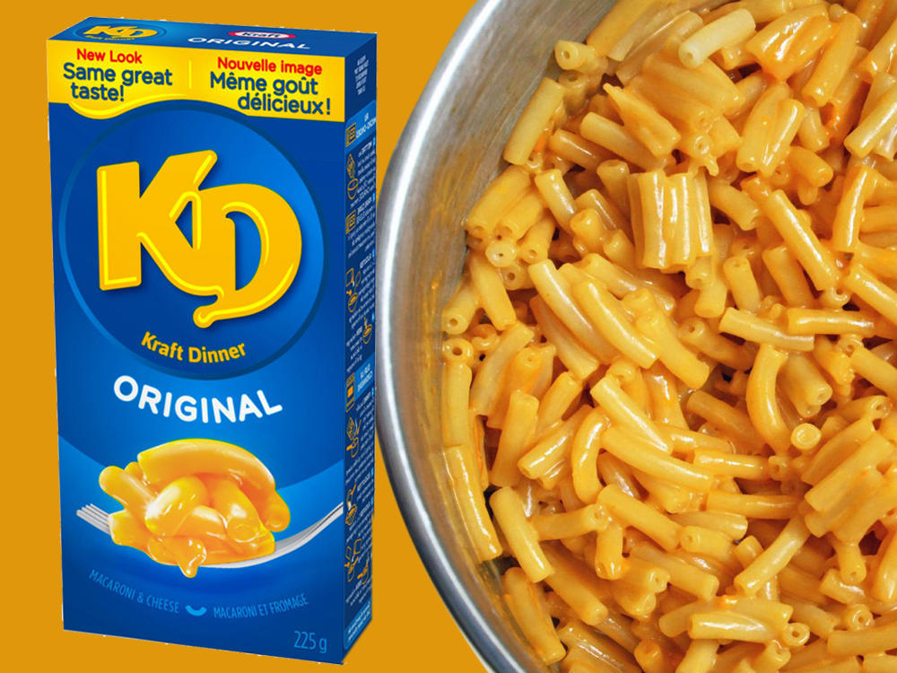

KD Recipe

Description
KD is a Canadian dish that is a prepackaged maccaroni and cheese meal. It
is staple amoung children and college students alike and since it's start
has come out with many new flavors and rendtions of the recipe. It
contains a prepachaged amount of cheese flavoring and in the box it also
comes with the alloded amount of noodles for people to put into their
pots.
Ingredients
- Pasta
- Cheese Sauce
- Dried Whey (from milk)
- Chedder Cheese
- Salt
- Butter
- Natural Flavors
- Citric Acid
- Sodium Phosphates
- Colour (contains Tartrazine)
- Additional Ingredients
Steps
- Bring water to boil in medium saucepan.
- Add Macaroni; cook 7 to 8 min. or until tender, stirring occasionally.
- Drain. (Do not rinse.) Return macaroni to pan.
- Add butter, milk and Cheese Sauce Mix; mix well.